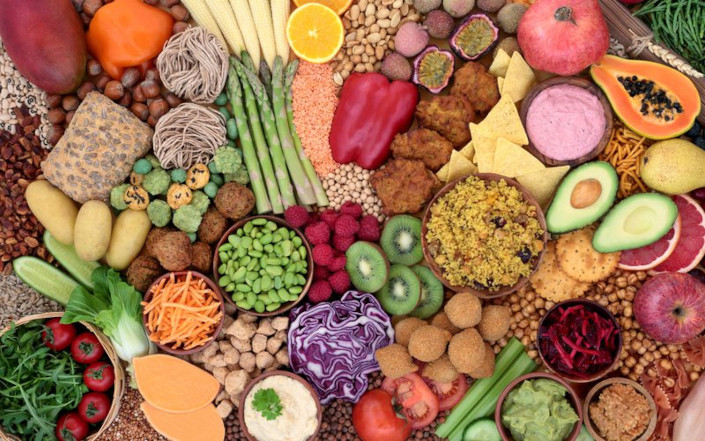

Veganismo: 4 dicas para começar
- Entenda as suas motivações
- Planeje
- Com que frequência você come fora?
- Você gosta de cozinhar?
- Você gosta de socializar?
- Conhece alguém que seja vegano que possa te dar dicas, receitas e indicar restaurantes veganos?
- Faça boas escolhas nutricionais
- Lembre-se da vitamina B12
Com qualquer tipo de mudança, quanto mais forte e pessoal é a sua motivação, maior a probabilidade de você mantê-la. Uma pessoa pode tomar a atitude de ser vegana pelos mais diversos motivos, como razões éticas ou emocionais. Outra possibilidade é a busca por uma saúde melhor, diminuindo a ingestão de gorduras saturadas.
Não há prazos para cumprir a missão de se tornar uma pessoa vegana, já que uma mudança imediata pode parecer muito restritiva. Também pode ser doloroso pensar em deixar de lado alimentos amados. Em vez disso, tente começar por ser vegano apenas no café da manhã em dois dias da semana, por exemplo ou, ainda, parar o consumo de frango primeiro.
A preparação dos alimentos é fundamental para tentar uma nova maneira de comer. Decidir o que comer pode ser uma luta constante, por isso vale encontrar receitas veganas atraentes ou encomendar marmitas que deixem a vida um pouco mais prática. Além disso, pergunte-se:
Nenhuma das respostas é uma espécie de desqualificação, mas você pode identificar potenciais armadilhas que possam dificultar a adoção desse novo estilo de vida. O último questionamento, inclusive, é superimportante, já que ter apoio ao fazer uma mudança pode ajudar a suavizar a transição.
Parar de consumir produtos de origem animal pode ser bom, mas, tão importante quanto é saber com o que você está substituindo esses itens. Em vez de exagerar nas batatas fritas, por exemplo, o ideal é buscar gorduras boas em outros tipos de alimento, como azeite de oliva, nozes e abacates, que são calóricos e dão saciedade.
Uma das maiores preocupações ao começar a seguir o veganismo está na falta da vitamina B12, nutriente proveniente de fontes animais e essencial para o organismo. A recomendação é informar o médico sobre a sua nova dieta para ter os níveis da vitamina acompanhados e, caso seja necessário, realizar a complementação da quantidade diária.
Outro ponto que gera receio é: onde encontrar proteína? Pode parecer que a falta de produtos de origem animal na alimentação fará com que a pessoa fique com falta desse nutriente. Porém, o feijão, tofu, vegetais, grãos, nozes e abacates são ótimos substitutos.